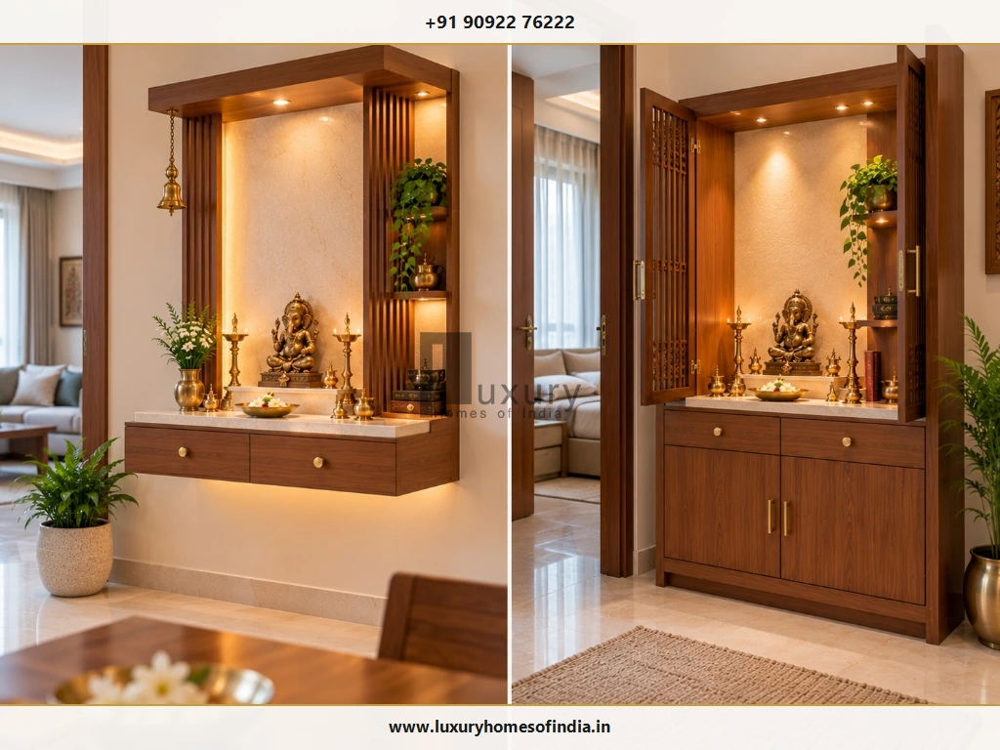
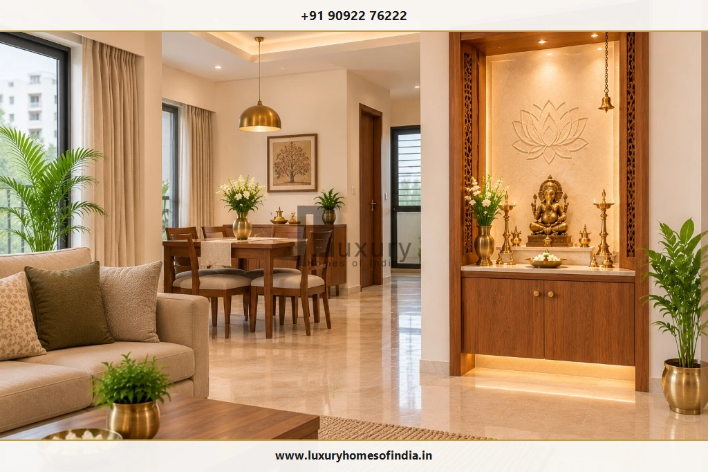
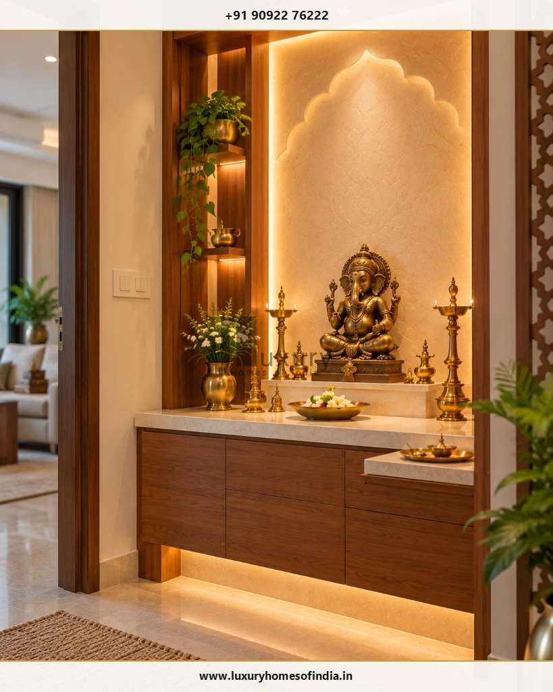
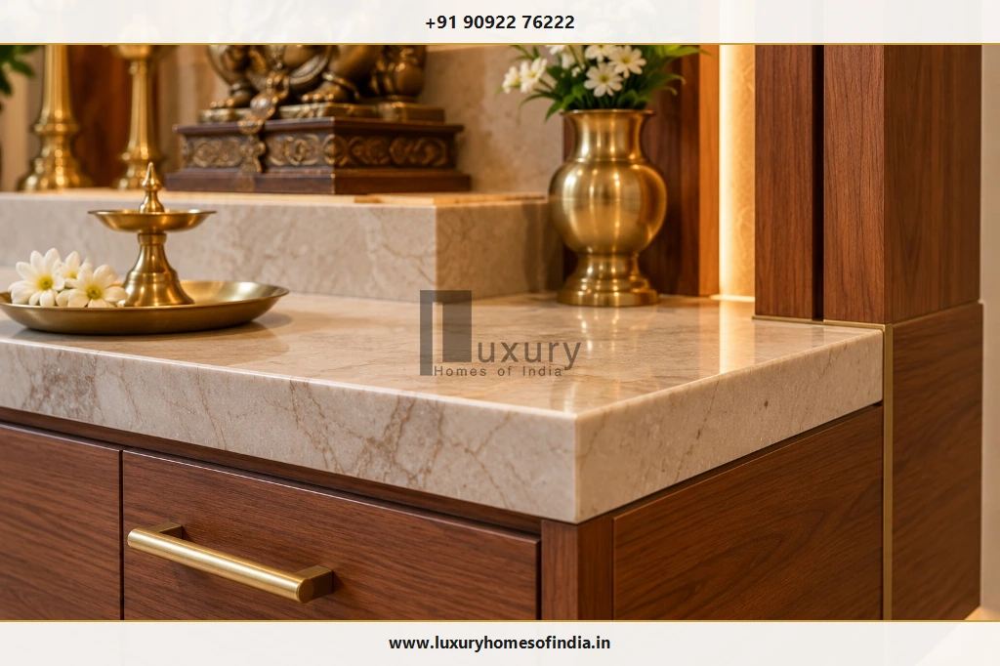

Executive Summary: Sacred Spaces in Modern Chennai Apartments
A well-designed pooja room in a Chennai apartment does not require a dedicated room or a large floor area. A wall-mounted floating mandir, a recessed prayer niche or a custom cabinet with CNC shutters can create a deeply sacred worship space while preserving unobstructed room circulation, essential storage, and the airy openness of urban flats.
Whether living in a 1 BHK, 2 BHK, or 3 BHK flat in Velachery, OMR, Anna Nagar, or Adyar, the optimal apartment mandir balances available wall depth, family ritual practices, structural load anchoring, safe flame separation, and 2700K warm layered illumination. Coordinating with professional interior execution ensures durable finishes that resist coastal Chennai humidity while honoring timeless devotional traditions.
A well-designed pooja room in a Chennai apartment does not need a separate room or a large floor area. A wall-mounted mandir, a compact prayer niche or a custom cabinet can create a dedicated worship space while preserving circulation, storage and the visual openness of the home. The best pooja room design for apartments in Chennai depends on the available wall space, family traditions, daily worship practices, material specifications and safe arrangements for lamps and electrical fittings. This guide explains how to choose a suitable layout, compare compact mandir designs, plan lighting and storage, understand traditional Vastu preferences, and select finishes for local living conditions. It also includes a practical apartment-planning checklist to help homeowners review a design before approving fabrication or installation.

1. Choose the Right Pooja Room Design for Your Apartment
The right design starts with how the family will use the space, not with the appearance of the mandir alone. Understanding your daily rituals—such as lighting lamps, sitting for meditation, or offering flowers—clarifies the required dimensions and clearance.
Wall-Mounted Pooja Unit
Suitable when floor space is strictly limited. Incorporates a secure mechanical wall mounting system, an accessible altar platform, discreet shallow drawers, and lighting drivers that can be maintained without dismantling the shrine.
Pooja Niche with Decorative Backdrop
An existing alcove or framed drywall niche defines the worship area without adding a bulky partition. Always verify wall construction and concealed electrical conduits before altering walls.
Compact Corner Mandir
A useful space-saving option for smaller flats when the corner remains accessible for daily prayer, wet cleaning and natural air circulation. Avoid locations where swinging doors collide with devotees.
Pooja Cabinet with Shutters
Features bi-fold or perforated jaali shutters to keep the surrounding living space visually serene. Crucial safety warning: if oil lamps or incense are lit, open the shutters fully; never burn a diya inside a closed cabinet.

2. Plan a Small Pooja Room Before Choosing the Design
In a compact Chennai flat, precise on-site measurements and daily-use workflows should dictate the carpentry design—not pre-fabricated furniture store catalogs.
- Measure the space accurately: Record the exact wall width, usable depth (minimum 10 to 14 inches), clear vertical height, and proximity to adjacent entry doors, windows, AC units, and switches.
- Allow comfortable access: Check that family members can approach the altar for morning prayer without blocking the dining table chairs or primary passage corridors.
- Plan storage around actual use: Separate daily essentials (cotton wicks, camphor, matchboxes, agarbatti) in shallow pull-out drawers from bulk oil containers and annual festival brassware.
- Review the mounting system: Confirm masonry wall construction (solid brickwork vs. hollow concrete block) and use certified heavy-duty anchor fasteners to support heavy marble altar slabs and bronze idols.
- Keep the altar visually calm: A restrained stone or timber backdrop paired with uncluttered lines prevents a compact niche from feeling visually cramped.
For an existing apartment, always inspect the layout and verify plumbing lines on the opposite side of the wall before committing to built-in cabinetry or wall cutting.
3. Vastu Considerations for Apartment Pooja Room Placement
Many families consider Vastu Shastra when deciding where to place a mandir in an apartment. In classical tradition, the north-east sector (Ishanya Kona) is commonly preferred, as it receives the first rays of morning solar energy, while east and north orientations are also widely adopted.

Practical Apartment Vastu Guidelines
Treat directional guidance as traditional spatial preferences rather than rigid architectural constraints that ruin living comfort:
- Prioritize a quiet, clean, and dignified zone within the apartment layout.
- Orient the altar so that devotees face east or north while praying.
- Avoid sharing a common wall with toilets, bathrooms, or laundry drains.
- Do not place a prayer shrine directly beneath an overhead beam or inside a master bedroom wardrobe.
- A separate dedicated prayer room is not mandatory for an apartment; a well-crafted niche or floating unit fulfills every sacred requirement.
For a comprehensive, room-by-room guide on directional alignments, read our companion guide: Pooja Room Placement as per Vastu: Best Direction, Idol Position and Planning Tips.
4. Materials for Pooja Room Interiors in Chennai
Material selection in coastal Chennai must account for high ambient humidity, salt-laden sea air, routine wet cleaning, and direct exposure to lamp heat.
| Material | Where It Can Work | What to Check in Chennai |
|---|---|---|
| Wood / Engineered Plywood | Mandir cabinetry, carved jaali screens, door shutters and outer frames | Specify IS 710 marine-grade BWP plywood or seasoned teakwood; ensure 1mm PVC edge-banding to block moisture ingress; verify flame separation. |
| Natural Marble & Granite | Altar tops, stepped deity pedestals and background wall claddings | Porous marble requires penetrative anti-stain sealing against oil and turmeric; check wall anchor dead load capacities for floating stone slabs. |
| Laminates & Acrylics | Cabinet carcasses, internal drawer linings and external decorative panels | Verify heat-resistant laminate grades around lamp trays; use non-fading matte or fluted finishes that resist fingerprints and smudge marks. |
| Brass & Metal Accents | Hanging bells, hardware pulls, diyas, flower bowls and inlay trims | Apply clear protective PU lacquer to prevent rapid greenish oxidation from coastal humidity; ensure secure mechanical ceiling hooks. |
Choose finishes that complement the existing apartment palette rather than adding competing, mismatched materials into a small footprint. Always resolve any existing wall dampness or balcony water seepage before mounting wooden cabinetry.
5. Lighting and Electrical Planning for a Mandir
Warm, low-glare lighting creates a sacred, meditative ambiance while providing the necessary visual clarity for reading scriptures and preparing ritual offerings.

Concealed LED Backlighting
Use 2700K to 3000K warm-white LED strips concealed behind fluted timber panels, arched niches, or translucent stone to create an ethereal silhouette around deities without glaring into the devotee's eyes.
Focused Task Downlights
Position mini-spotlights directly over the altar counter to clearly illuminate brass thalis, kumkum bowls, and holy books during morning rituals.
Electrical Safety & Flame Separation
- Plan concealed conduit drops and switchboards before joinery fabrication so no loose wires hang near altars.
- Keep electrical outlets, switches and LED wiring safely separated from open flame wicks, hot ghee, and water offerings.
- Ensure low-voltage LED drivers and transformers are placed in accessible, ventilated compartments for quick maintenance.
- Never leave burning oil lamps or camphor unattended, especially within reach of young children or pets.
6. Colours and Detailing for an Elegant Pooja Unit
A restrained, cohesive colour palette lends a compact apartment mandir a refined, light-filled aesthetic without appearing heavy or visually intrusive:
Palette 1 Ivory & Light Oak
A calm, airy combination that reflects natural daylight and visually expands narrow apartment corridors.
Palette 2 Cream & Warm Brass
Infuses classical South Indian temple warmth through muted metallic accents paired with off-white marble backdrops.
Palette 3 Natural Teak & Beige
An understated contemporary aesthetic that harmonizes beautifully with standard living room timber furnishings.
Palette 4 White Stone & Fluted Panels
Tactile fluting adds vertical depth and shadow lines without cluttering the shrine with heavy floral moldings.
Use carved arches, jali screens, or brass inlays selectively. In smaller apartments, impeccable joinery, flawless edge-finishing, and balanced proportions matter far more than excessive ornamentation.
7. What Works in 1 BHK, 2 BHK and 3 BHK Apartments?
While bedroom count is a useful baseline, the available wall width, furniture arrangement, and family prayer customs should determine the ultimate design:
| Apartment Type | Recommended Mandir Layout | Main Planning Priority |
|---|---|---|
| 1 BHK Flat | Wall-mounted floating mandir or compact corner unit with shallow pull-out drawers | Preserve 100% of usable floor area; avoid encroaching into walking corridors. |
| 2 BHK Flat | Integrated recessed wall niche or tailored cabinet along the living-dining transition | Balance spiritual privacy with family access; integrate organized drawer storage for puja books. |
| 3 BHK Flat | Larger built-in mandir credenza, semi-private jaali-screened corner, or dedicated alcove | Coordinate architectural proportions, dedicated smoke exhaust, and multiple lighting circuits. |
These typologies serve as practical starting points. Always test the design against on-site tape measurements and mockups before placing fabrication deposits.
8. Safety and Maintenance Checklist for Apartment Mandirs
Review these practical safety protocols before completing your apartment pooja unit:

- Use certified heavy-duty mechanical wall anchors to support the full dead weight of stone and bronze idols.
- Maintain a minimum 24-inch vertical clearance between burning diya flames and overhead wooden shelves or curtains.
- Never burn a diya inside a closed cabinet; always open shutters fully during aarti and extinguish wicks before shutting doors.
- Position the mandir near a window or install a silent inline exhaust fan if burning dhoop or sambrani regularly.
- Inspect surrounding masonry for seepage from adjoining bathrooms or balconies prior to installing wooden units.
- Ensure LED power drivers remain demountable and accessible for quick replacement.
- Wipe ghee drops and turmeric spills promptly with a micro-fibre cloth to prevent permanent stone etching.
9. What Determines the Cost of an Apartment Pooja Room Design?
The total investment for an apartment mandir depends on whether you opt for a modular ready-made unit or custom on-site architectural joinery.
Key cost drivers include:
- Overall dimensions, depth, and height of the unit
- Stone selection: Italian marble vs. Indian composite vs. granite
- Cabinetry materials: Marine-grade BWP plywood vs. commercial MDF
- Decorative craft: CNC laser-cut jaali screens or hand carvings
- Hardware: Soft-close runners, brass handles, and pocket door tracks
- Electrical work: Concealed LED channels, drivers, and switches
- On-site civil prep: Wall recessing, anchoring, and plaster touch-ups
- Protective finishes: Polyurethane clear lacquers and stone sealers
Request an itemised quotation that explicitly details material brands, hardware specifications, installation labor, and warranty terms rather than comparing total lump sums.
Frequently Asked Questions
Conclusion: Creating a Sacred Haven in Urban Chennai Living
A thoughtful pooja room design for apartments in Chennai begins with the home's actual dimensions and the family's worship practices. A wall-mounted mandir, compact niche or integrated cabinet can create a dedicated space when its proportions, materials, lighting and installation are planned carefully.
Before approving the design, review access, storage, electrical arrangements, lamp safety and maintenance requirements. A well-planned prayer space should complement the home while remaining practical for everyday use.
Planning Your Apartment Interiors in Chennai?
Collaborate with Luxury Homes of India's interior design team to craft custom, space-saving prayer units and turnkey residential interiors tailored to your family's lifestyle.